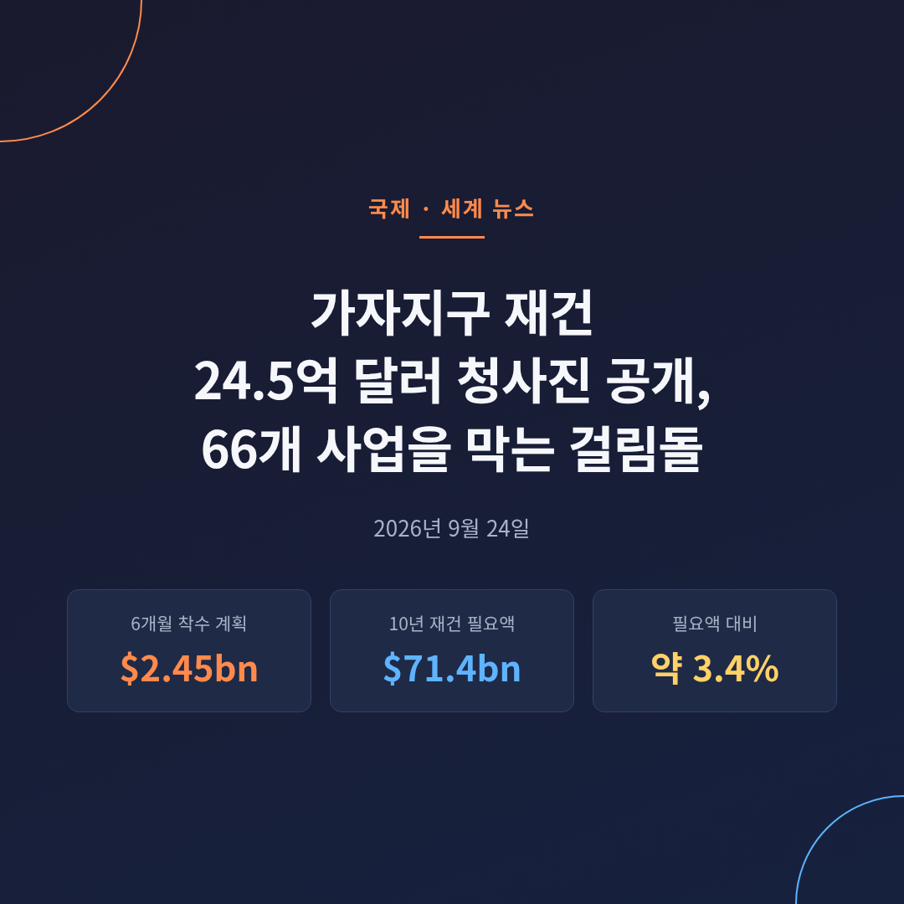
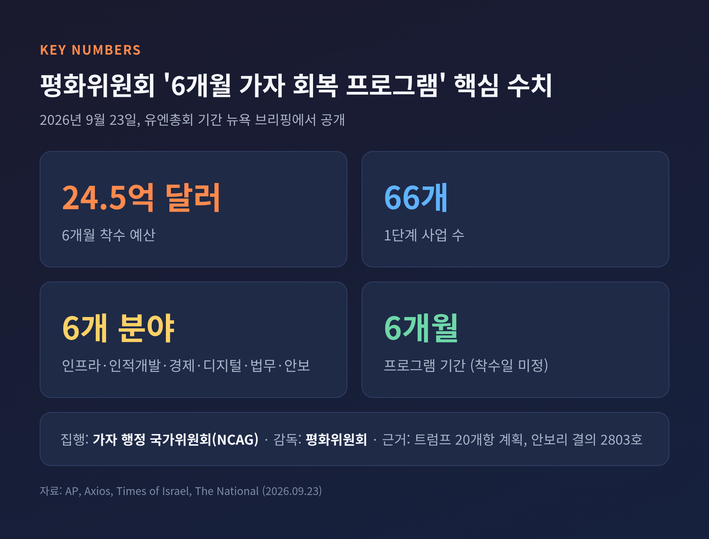
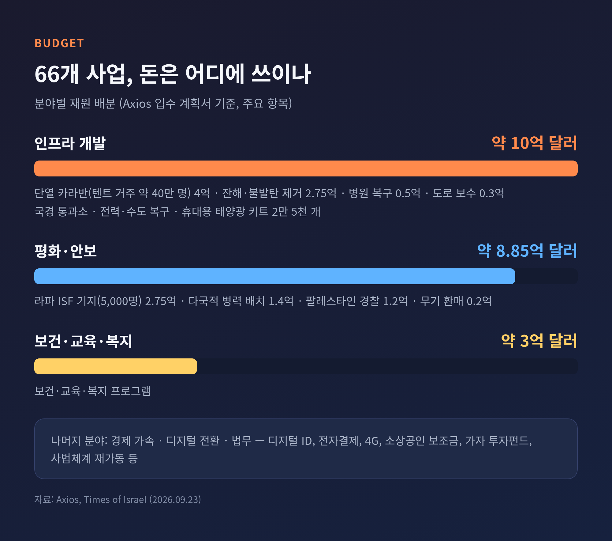
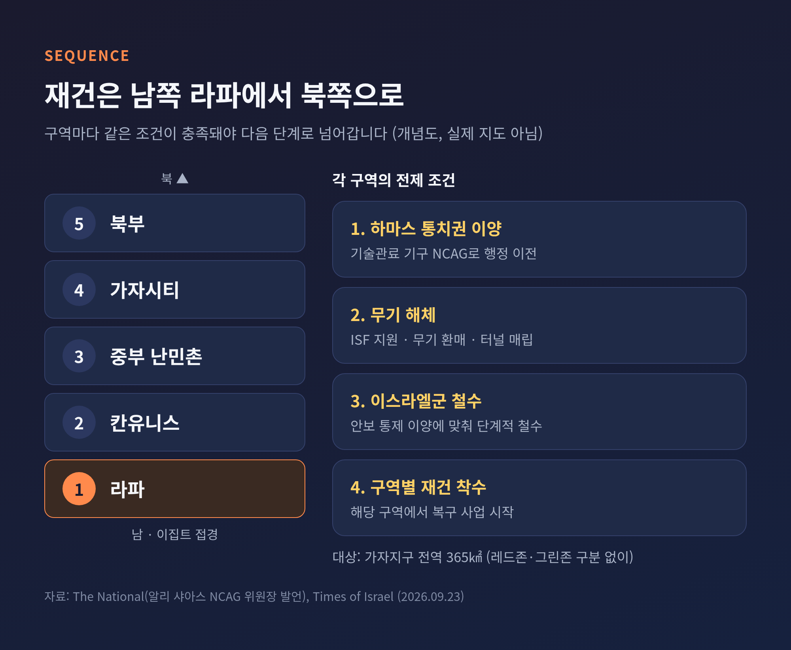
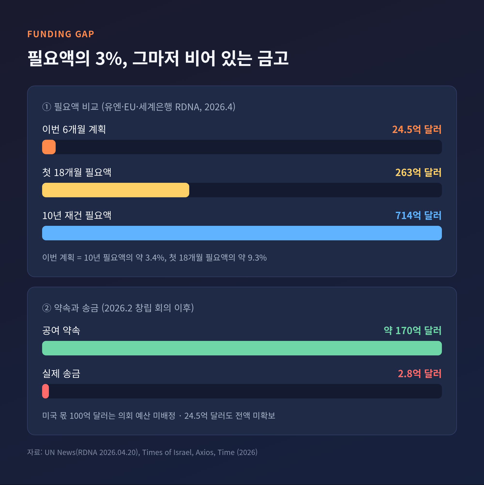
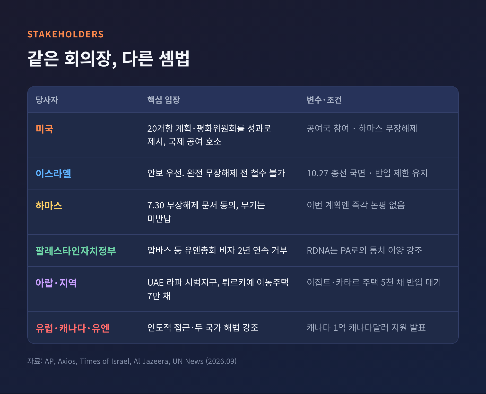
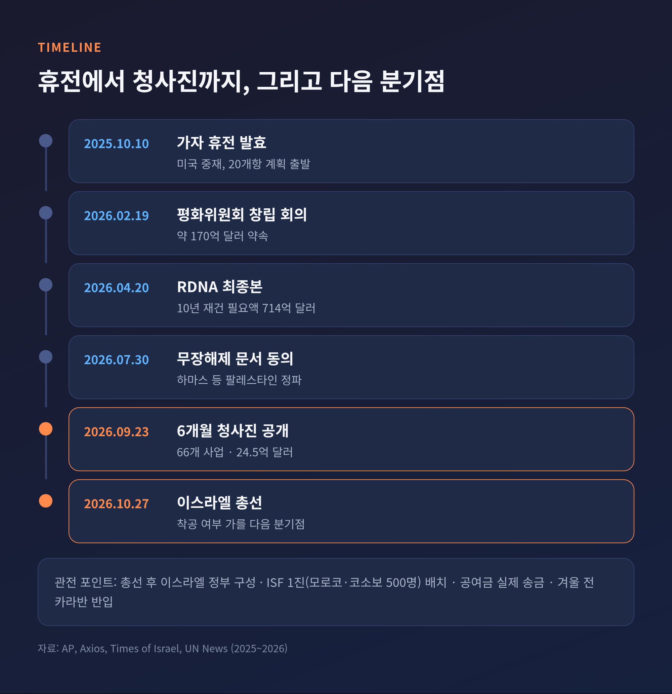

가자지구 재건 24.5억 달러 청사진 공개, 66개 사업을 막는 걸림돌

이번 글에서는 유엔총회 기간에 공개된 평화위원회의 가자지구 재건 청사진을 정리해 보겠습니다.
무엇을 짓겠다는 계획인지, 왜 아직 첫 삽을 뜨지 못하는지, 각 당사자는 어떤 입장인지 차례로 살펴봅니다.
3줄 요약
- 미국 주도 평화위원회가 9월 23일 뉴욕에서 6개월간 66개 사업, 24억 5천만 달러 규모의 가자 재건 착수 계획을 내놓았습니다.
- 유엔·EU·세계은행이 추산한 10년 재건 필요액 714억 달러와 비교하면 약 3%에 불과한 '마중물'입니다.
- 하마스 무장해제, 이스라엘군 철수, 10월 27일 이스라엘 총선, 공여금 미집행이 동시에 풀려야 착공이 가능합니다.

무슨 일이 있었나 — 유엔총회 옆에서 나온 '6개월 계획'
9월 23일, 평화위원회(Board of Peace)가 뉴욕에서 이사회 회의와 고위급 브리핑을 열었습니다.
제81차 유엔총회 일반토의가 한창이던 때입니다.
이 자리에서 '6개월 가자 회복 프로그램'이 공개됐습니다.
첫 66개 사업에 24억 5천만 달러가 든다는 내용입니다.
트럼프 대통령의 가자 전쟁 종식 20개항 계획을 실행에 옮기기 위한 첫 단계로 설계됐습니다.
발표는 평화위원회 선임 특사인 토니 블레어 전 영국 총리가 맡았습니다.
재러드 쿠슈너, 스티브 위트코프, 니콜라이 믈라데노프 고위대표도 연단에 섰습니다.
Axios에 따르면 약 35개국 대표가 초청됐고, 평화위원회 회원국이 아닌 EU와 일부 회원국도 포함됐습니다.
다만 착수일은 제시되지 않았습니다.
믈라데노프 고위대표는 "달력에 묶여 있지 않다"는 취지로 말했습니다. (AP)
계획의 성패가 일정이 아니라 조건에 달려 있다는 뜻입니다.
66개 사업, 돈은 어디에 쓰이나
사업은 여섯 분야로 나뉩니다.
인프라 개발, 인적 개발, 경제 가속, 디지털 전환, 법무, 평화·안보입니다.
가장 큰 몫은 인프라입니다. 약 10억 달러가 배정됐습니다.
- 텐트 생활자 약 40만 명을 위한 단열 카라반: 약 4억 달러
- 잔해·불발탄 제거: 2억 7,500만 달러
- 병원 복구: 5,000만 달러
- 도로망 보수: 3,000만 달러
- 이 밖에 국경 통과소 보수, 전력·수도 복구, 휴대용 태양광 키트 2만 5,000개
두 번째는 안보입니다. 약 8억 8,500만 달러입니다.
라파에 국제안정화군(ISF) 5,000명을 수용할 기지를 짓는 데 2억 7,500만 달러가 들어갑니다.
팔레스타인 경찰 동원에 1억 2,000만 달러, 하마스 등 무장 조직의 무기를 사들이는 '환매 프로그램'에 2,000만 달러가 책정됐습니다. (Axios)
보건·교육·복지에는 약 3억 달러가 배정됐습니다.
디지털 신분증, 전자결제, 4G 통신, 소상공인 재기 보조금, 가자 투자펀드 같은 사업도 들어 있습니다.

집행은 팔레스타인 기술관료 기구인 '가자 행정 국가위원회(NCAG)'가 맡습니다.
평화위원회가 이를 감독하는 구조입니다.
NCAG는 장기적으로 이스라엘·이집트와 맞닿은 국경 통과소 관리도 넘겨받게 됩니다.
재건 순서도 정해졌습니다.
라파에서 시작해 칸유니스, 중부 난민촌, 가자시티, 북부 순으로 올라갑니다.
알리 샤아스 NCAG 위원장은 하마스가 통치권을 내려놓고, 무기가 해체되고, 이스라엘군이 물러나는 속도에 맞춰 구역별로 진행한다고 설명했습니다. (The National)

왜 중요한가 — 필요액의 3%, 그마저도 비어 있는 금고
숫자를 나란히 놓으면 이 계획의 성격이 보입니다.
유엔·EU·세계은행은 올해 4월 '가자 신속 피해·수요 평가(RDNA)' 최종본을 냈습니다.
향후 10년 재건 필요액은 714억 달러입니다.
첫 18개월에만 263억 달러가 필요하다고 봤습니다.
물리적 피해는 352억 달러, 경제·사회적 손실은 227억 달러로 추산됐습니다. (UN News)
피해 규모도 구체적입니다.
주택 37만 1,888호가 파괴되거나 손상됐습니다.
병원의 절반 이상이 멈췄고, 학교는 거의 모두 피해를 입었습니다.
경제는 84% 위축됐고, 190만 명이 집을 떠나 피란했습니다.
보고서는 가자의 인간개발 수준이 77년 뒤로 밀려났다고 평가했습니다.
이번 24.5억 달러는 10년 필요액의 약 3.4%입니다.
첫 18개월 필요액과 비교해도 10분의 1이 안 됩니다.
재건 전체가 아니라 '착수'를 위한 마중물로 읽어야 하는 이유입니다.
그 마중물조차 아직 다 채워지지 않았습니다.
지난 2월 평화위원회 창립 회의에서는 약 170억 달러의 약속이 나왔습니다.
트럼프 대통령이 밝힌 미국 몫 100억 달러가 포함된 금액인데, 미 의회는 이를 아직 배정하지 않았습니다. (Time, Axios)
Times of Israel에 따르면 실제로 송금된 돈은 2억 8,000만 달러입니다.
Axios도 24.5억 달러 전액이 아직 확보되지 않았다고 전했습니다.

배경 — 휴전 11개월, 멈춰 선 20개항 계획
휴전은 2025년 10월 10일 발효됐습니다.
20개항 계획의 설계는 단순했습니다.
하마스가 무장을 해제하고, 국제안정화군이 들어오고, 비정치적 팔레스타인 정부가 행정을 맡고, 이스라엘군이 단계적으로 물러난다는 것입니다.
유엔 안보리는 결의 2803호로 이 틀을 승인했습니다.
평화위원회를 과도 행정 기구로 환영하고, 국제안정화군 설치를 허용했습니다. (UN News)
현실은 설계와 다릅니다.
AP는 계획이 "대체로 정체됐다"고 평가했습니다.
가장 격렬한 전투는 멈췄고 인도적 상황도 나아졌습니다.
그러나 이스라엘군은 가자의 약 60%를 통제하고 있습니다.
하마스는 무기를 내려놓지 않았고, 국제 병력과 새 정부는 아직 가자에 들어가지 못했습니다.
주민 대다수는 여전히 텐트나 무너진 집에서 지냅니다.
예전엔 "휴전만 되면 재건이 시작된다"고들 했습니다.
지금은 휴전이 재건의 출발선이 아니라 대기실이 되어 버린 모습입니다.
발표 당일에도 폭력은 이어졌습니다.
Al Jazeera는 9월 23일 이스라엘 공격으로 팔레스타인인 7명이 숨졌다고 보도했습니다.
네타냐후 총리는 칸유니스 인근 공격이 하마스 고위 재무 담당자를 겨냥했다고 밝혔습니다.
쟁점 — 누가 먼저 움직이느냐의 문제
핵심 쟁점은 순서입니다.
하마스를 포함한 팔레스타인 정파는 7월 30일 평화위원회의 무장해제 계획 문서에 동의했습니다.
평화위원회의 구상은 무장해제와 이스라엘군 철수를 점진적·상호적으로 맞바꾸는 방식입니다.
이스라엘의 입장은 다릅니다.
네타냐후 총리는 하마스가 완전히 무장해제한 뒤에야 군이 철수한다고 못 박았습니다. (Times of Israel)
Axios에 따르면 이스라엘은 무장해제 개시 전 14일 휴전도 이행하지 않고 있어, 하마스의 동의가 실제로 시험대에 오르지도 못했습니다.
현장의 병목도 있습니다.
이스라엘이 직접 심사한 가자 경찰 훈련생들은 이집트 훈련장으로 나가지 못하고 있습니다.
이집트·카타르가 기부한 이동식 주택 5,000채는 이스라엘의 반입 거부로 국경 이집트 쪽에 머물러 있습니다. (Times of Israel)
이스라엘은 안보를 우선하는 입장이고, 평화위원회는 이런 제한이 재건을 늦춘다고 봅니다.
믈라데노프 고위대표는 지난 8월 임시 주거 반입 제한을 "용납할 수 없다"고 비판한 바 있습니다.
지역 편중 우려도 제기됩니다.
가자는 지금 하마스가 통제하는 '레드존'과 이스라엘군이 통제하는 '그린존'으로 나뉘어 있습니다.
주민 절대다수는 레드존에 삽니다.
샤아스 위원장은 NCAG가 "색맹"처럼 두 구역을 가리지 않겠다고 했습니다.
하지만 회의론자들은 재건이 결국 그린존에서만 이뤄질 수 있다고 걱정합니다. (Times of Israel)
이해관계 — 같은 회의장, 다른 셈법
미국은 성과를 강조합니다.
트럼프 대통령은 9월 22일 유엔총회 연설 대부분을 이란 문제에 썼습니다.
가자에 대해서는 자신이 끝낸 여러 분쟁 중 하나로 꼽고, 20개항 계획과 평화위원회를 성과로 제시했습니다. (UN News)
쿠슈너는 이번 과제를 "불가능한 과제"라고 부르며 국제사회의 협력을 요청했습니다. (The National)
이스라엘은 안보가 먼저라는 입장입니다.
완전한 무장해제 없이는 철수도 없다는 원칙을 유지하고 있습니다.
10월 27일 총선을 앞두고 있어 협상 여지는 더 좁습니다.
믈라데노프는 선거 때문에 "모든 것이 더 감정적이고 정치적으로 민감하다"는 취지로 말했습니다.
하마스는 문서상 무장해제에 동의했지만, 무기는 아직 그대로입니다.
이번 계획에 대한 공식 논평은 즉각 나오지 않았습니다. (AP)
팔레스타인자치정부(PA)는 이번 구도에서 한발 비켜나 있습니다.
미 국무부는 2년 연속 압바스 대통령 등 PA 관리들의 유엔총회 비자를 거부했습니다.
유엔총회는 표결로 압바스의 사전 녹화 연설을 허용했습니다. (Al Jazeera)
반면 유엔·EU·세계은행의 RDNA는 재건이 PA로의 거버넌스 이양을 뒷받침해야 한다고 명시하고 있습니다.
재건의 주인이 누구냐는 질문이 여기서 갈립니다.
아랍·지역 국가는 돈과 물자로 참여하고 있습니다.
UAE는 라파에 5만 명이 살 수 있는 '에미리트 지구' 시범 사업을 맡았습니다. (Axios)
튀르키예는 이동식 주택 7만 채를 약속했고, 에르도안 대통령은 재건을 "가능한 한 빨리" 시작하라고 촉구했습니다.
사우디는 영국·프랑스·캐나다와 함께 팔레스타인 국가 관련 회의를 공동 주재했습니다.
유럽·캐나다와 유엔은 인도적 접근을 앞세웁니다.
마크롱 프랑스 대통령은 평화를 말하지만 인도적 통로는 열리지 않았다고 비판했습니다.
백악관은 트럼프만큼 역내 평화에 기여한 이는 없다고 반박했습니다.
카니 캐나다 총리는 1억 캐나다달러 지원을 발표하면서, 이스라엘이 하마스와 이란의 위협에 직면해 있다는 점도 함께 언급했습니다.
구테흐스 유엔 사무총장은 유엔이 가자에서 임무를 수행할 수 있어야 한다고 말했습니다. (Al Jazeera)

앞으로의 전망 — 10월 27일 이후를 보는 계획
평화위원회가 기대는 시점은 분명합니다.
이스라엘 총선 이후입니다.
Times of Israel과 Axios는 평화위원회 당국자들이 선거 뒤 새 정부가 들어서면 영향력이 회복될 것으로 본다고 전했습니다.
다만 뚜렷한 승자 없이 과도정부 체제가 이어질 가능성도 적지 않다고 덧붙였습니다.
안보 쪽 준비는 진행 중입니다.
재스퍼 제퍼스 국제안정화군 사령관은 5단계 비무장화 접근을 설명했습니다.
1진으로 모로코·코소보 병력 500명이 배치되고, 알바니아·카자흐스탄이 뒤따르는 구상입니다. (Times of Israel, AP)
가장 급한 과제는 겨울입니다.
샤아스 위원장은 겨울 대비 사업을 최우선으로 꼽았습니다.
레드존 해안 지역에만 100만 명 넘는 주민이 텐트에서 지내고 있습니다.
40만 명 분의 카라반이 들어가더라도, 나머지 다수는 당분간 텐트에 남게 됩니다.

한국 입장에서도 볼 대목은 있습니다.
재건이 본격화되면 인프라·통신·디지털 행정 분야의 국제 협력 수요가 커질 수 있습니다.
하지만 지금 단계에서 그 신호는 사업 목록이 아니라 정치 일정에서 나올 가능성이 큽니다.
정리하면 이렇습니다.
이번 청사진은 가자 재건의 '무엇을'과 '어떻게'를 처음으로 구체적인 숫자로 내놓았다는 점에서 의미가 있습니다.
카라반 개수, 도로 예산, 경찰 예산까지 적혀 있습니다.
반면 '언제'와 '누가 먼저'에는 여전히 답이 없습니다.
"계획은 완성됐지만, 착공 스위치는 뉴욕이 아니라 가자와 예루살렘에 있다."
이 계획이 6개월 뒤에도 문서로만 남아 있을지 묻는다면, 그 답은 10월 27일 이후의 첫 몇 주가 알려 줄 것이라고 생각합니다.